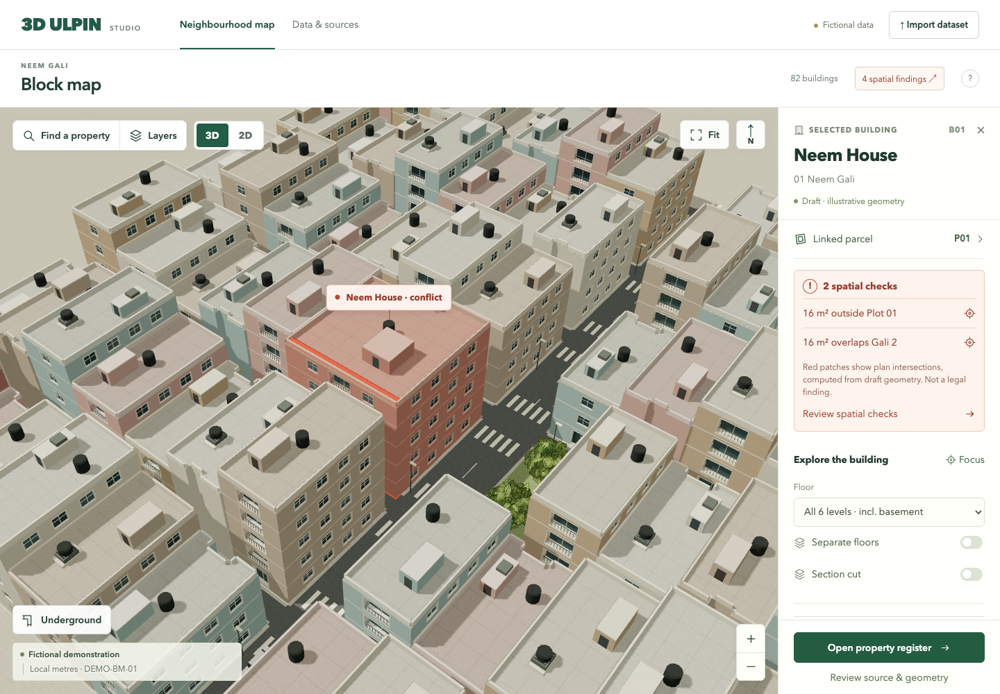

Loading reference review…
Match the supplied composition and interactions. Use one canonical schema across different datasets, with source geometry kept separate from display detail.

What the reference shows
Current gap
How to build it
Shared data required
Original files and integrity